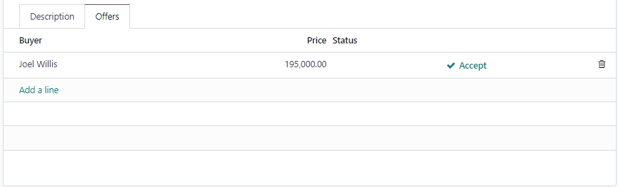

Write importable modules¶
重要
This tutorial assumes familiarity with the Server framework 101 tutorial and the モジュールデータの定義 tutorial.
Although, as developers, we prefer to have the full power of Python to write our modules, it is sometimes not possible to do so; typically on managed hosting solutions which do not allow the deployment of custom Python code like the Odoo.com platform.
However, the flexible nature of Odoo is meant to allow customizations out of the box. Whilst a lot is possible with Studio, it is also possible to define models, fields and logic in XML Data Files. This makes it easier to develop, maintain and deploy these customizations.
In this tutorial, we will learn how to define models, fields and logic in XML data files and bundle them into a module. These are sometimes called importable modules, or data modules. We will also see the limitations of this approach to module development.
Problem statement¶
Like in the Server framework 101 tutorial, we will be working on Real Estate concepts.
Our goal is to create a new application to manage Real Estate properties in a similar (albeit simpler) way to the Server framework 101 tutorial. We will define the models, fields and logic in XML data files instead of Python files.
At the end of this tutorial, we will be able to achieve the following in our app:
Manage Real Estate properties that are for sale
Publish these properties on a website
Accept offers online from the website
Invoice the buyer when the property is sold
モジュール構造¶
Like in any development project, a clear structure makes it easier to manage and maintain the code.
Unlike standard Odoo modules that use both Python and XML files, data modules use only XML files. Therefore, it is expected that your work tree will look something like this:
estate
├── actions
│ └── *.xml
├── models
│ └── *.xml
├── security
│ └── ir.model.access.csv
│ └── estate_security.xml
├── views
│ └── *.xml
├── __init__.py
└── __manifest__.py
The only Python files you will have are the __init__.py and __manifest__.py files.
The __manifest__.py file will be the same as for any Odoo module, but will also import its
models in the data list.
Remember to list files in the data section of __manifest__.py in order of dependency,
typically starting with model files.
The __init__.py file is empty, but is required for Odoo to recognize the module if you ever
want to deploy your module in the classic way (by adding it in an addons path). It is not strictly
necessary for modules that will be imported, but it is a good practice to keep it.
Deploying the module¶
To deploy the module, you will need to create a zip file of the module and upload it to your
Odoo instance. Make sure that the module base_import_module is installed on your instance,
then go to the and upload the zip file. You must be
in developer mode to see the Import Module menu item.
If you modify the module, you will need to create a new zip file and upload it again, which will reload all the data in the module. Note however that some operations are not possible, like changing the type of a field you created previously. Data created by previous versions of the module (like removed fields) will not be automatically deleted. In general, the simplest way to handle this is to start with a fresh database or to uninstall the module prior to uploading the new version.
When uploading a module, the wizard will accept two options:
Force init: if your module is already installed and you upload it again; checking this option will force the update of all data marked asnoupdate="1"in the XML files.Import demo data: self explanatory
It is also possible to deploy the module using the odoo-bin command line
tool with the deploy command:
$ odoo-bin deploy <path_to_your_module> https://<your_odoo_instance> --login <your_login> --password <your_password>
This command also accepts the --force option, which is equivalent to the Force init
option in the wizard.
Note that the user you use to deploy the module must have Administration/Settings access rights.
Exercise
次のようにフォルダとファイルを作成してください。
/home/$USER/src/tutorials/estate/__init__.py/home/$USER/src/tutorials/estate/__manifest__.py
The
__manifest__.pyfile should only define the name and the dependencies of our modules. The only necessary framework module for now isbase(andbase_import_module- although your module does not depend on it strictly speaking, you need it to be able to import your module).Create a zip file of your module and upload it to your Odoo instance.
Models and basic fields¶
As you can imagine, defining models and fields in XML files is not as straightforward as in Python.
Since data files are read sequentially, you must define the elements in the right order. For example, you must define a model before you can define a field on that model, and you must define fields before adding them to a view.
In addition, XML is simply much more verbose than Python.
Let's start by defining a simple model to represent a Real Estate property in the models
directory of our module.
Odoo models are stored in database as ir.model records. Like any other record, they can be
defined in XML files:
<?xml version="1.0" encoding="utf-8"?>
<odoo>
<record id="model_real_estate_property" model="ir.model">
<field name="name">Real Estate Property</field>
<field name="model">x_estate.property</field>
</record>
</odoo>
Note that all models and fields defined in data files must be prefixed with x_; this is
mandatory and is used to differentiate them from models and fields defined in Python files.
Like for classic models defined in Python, Odoo will automatically add several fields to the model:
id(Id) The unique identifier for a record of the model.create_date(Datetime) Creation date of the record.create_uid(Many2one) User who created the record.write_date(Datetime) Last modification date of the record.write_uid(Many2one) User who last modified the record.
We can also add several fields to our new model. Let's add some simple fields, like a name (string), selling price (float), a description (as html), and a postcode (as a char).
Like for models, fields are simply records of the ir.model.fields model and can be
defined as such in data files:
<?xml version="1.0" encoding="utf-8"?>
<odoo>
<!-- ...model definition from before... -->
<record id="field_real_estate_property_name" model="ir.model.fields">
<field name="model_id" ref="estate.model_real_estate_property" />
<field name="name">x_name</field>
<field name="field_description">Name</field>
<field name="ttype">char</field>
<field name="required">True</field>
</record>
<record id="field_real_estate_property_selling_price" model="ir.model.fields">
<field name="model_id" ref="estate.model_real_estate_property" />
<field name="name">x_selling_price</field>
<field name="field_description">Selling Price</field>
<field name="ttype">float</field>
<field name="required">True</field>
</record>
<record id="field_real_estate_property_description" model="ir.model.fields">
<field name="model_id" ref="estate.model_real_estate_property" />
<field name="name">x_description</field>
<field name="field_description">Description</field>
<field name="ttype">html</field>
</record>
<record id="field_real_estate_property_postcode" model="ir.model.fields">
<field name="model_id" ref="estate.model_real_estate_property" />
<field name="name">x_postcode</field>
<field name="field_description">Postcode</field>
<field name="ttype">char</field>
</record>
</odoo>
You can set various attributes for your new field. For basic fields, these include:
name: the technical name of the field (must begin withx_)field_description: the label of the fieldhelp: a help text for the field, displayed in the interfacettype: the type of the field (e.g.char,integer,float,html, etc.)required: whether the field is required or not (default:False)readonly: whether the field is read-only or not (default:False)index: whether the field is indexed or not (default:False)copied: whether the field is copied when duplicating a record or not (default:Truefor non-relational non-computed fields,Falsefor relational and computed fields)translate: whether the field is translatable or not (default:False)
Attributes are also available to control HTML sanitization as well as other, more advanced
features; for a complete list, refer to the ir.model.fields model in the database available
in the menu or
see the ir.model.fields model definition in the base module.
Exercise
次の基本フィールドをテーブルに追加します
フィールド |
型 |
Required |
|---|---|---|
x_date_availability |
日付 |
|
x_expected_price |
フロート |
True |
x_bedrooms |
整数 |
|
x_living_area |
整数 |
|
x_facades |
整数 |
|
x_garage |
Boolean |
|
x_garden |
Boolean |
|
x_garden_area |
整数 |
|
x_garden_orientation |
選択 |
The x_garden_orientation field must have 4 possible values: 'North', 'South', 'East'
and 'West'. The selection list must be created by first creating the ir.model.fields
record for the field itself, then creating the ir.model.fields.selection records. These
records take three fields: field_id, name (the name in the UI) and value (the value
in the database). A sequence field can also be set, which controls the order in which
the selections are displayed in the UI (lower sequence values are displayed first).
デフォルト値¶
In Python, default values can be set on fields using the default argument in the field
declaration. In data modules, default values are set by creating an ir.default record
for each field. For example, it is possible to set the default value of the
x_selling_price field to 100000 for all properties by creating the following record:
<odoo>
<!-- ...model definition from before... -->
<record id="default_real_estate_property_selling_price" model="ir.default">
<field name="field_id" ref="estate.field_real_estate_property_selling_price" />
<field name="json_value">100000</field>
</record>
</odoo>
For more details, refer to the ir.default model in the database available in the
menu or
see the ir.default model definition in the base module.
警告
These defaults are static but can be set by company and/or user using the user_id
and company_id fields of the ir.default record. This means that having a dynamic
default value of "today" for the x_date_availability field is not possible, for example.
セキュリティ¶
Security in data modules is exactly the same as for Python modules and can be found in Chapter 4: Security - A Brief Introduction.
Refer to that tutorial for details.
Exercise
Create the
ir.model.access.csvfile in the appropriate folder and define it in the__manifest__.pyfile.base.group_userというグループに読取、書込、追加、解除の許可を与えます。
ちなみに
The warning message in the log gives you most of the solution ;-)
ビュー¶
Views are the UI components that allow users to interact with the data. They are defined
in XML files and can be found in the views directory of your module.
Since views and actions are already defined in Chapter 5: Finally, Some UI To Play With and Chapter 6: Basic Views, we will not go into details here.
Exercise
Add a basic UI to the estate module.
Add a basic UI to the estate module to allow users to view, create, edit and delete
Real Estate properties.
Create an action for the model
x_estate.property.Create a tree view for the model
x_estate.property.Create a form view for the model
x_estate.property.Add the views to the action.
Add a menu item to the main menu to allow users to access the action.
Relations¶
The real power of relational systems like Odoo lies in the ability to link records together. In a normal Python module, one could define new fields on a model to link it to other models in a single line of code. In a data module, this is still possible but requires a bit more legwork since we can't use the same syntax as in Python.
As in Chapter 7: Relations Between Models, we will add some relations to our estate
module. We will add links to:
その物件を購入した顧客
不動産を売却した不動産業者は
物件の種類：家、アパート、ペントハウス、お城...
物件を特徴づけるタグのリスト：居心地が良い、改装されている...
受け取ったオファーのリスト
Many-to-one¶
A many-to-one is a simple link to another object. For example, in order to define a link to the
res.partner, we can define a new field in our model:
<odoo>
<!-- ...model definition from before... -->
<record id="field_real_estate_property_partner_id" model="ir.model.fields">
<field name="model_id" ref="estate.model_real_estate_property" />
<field name="name">x_partner_id</field>
<field name="field_description">Customer</field>
<field name="ttype">many2one</field>
<field name="relation">res.partner</field>
</record>
</odoo>
In the case of many-to-one fields, several attributes can be set to detail the relation:
relation: the name of the model to link to (required)ondelete: the action to perform when the record is deleted (default:set null)domain: a domain filter to apply to the relation
Exercise
Create a new model
x_estate.property.typewith the following fields:フィールド
型
Required
名前文字
True
Add an action, list view and menu item for the
x_estate.property.typemodel.Add Access Rights to the
x_estate.property.typemodel to give access to users.Create the following fields on the
x_estate.propertymodel:フィールド
型
Required
x_property_type_idMany2one (
x_estate.property.type)True
x_partner_id(buyer)Many2one (
res.partner)x_user_id(salesperson)Many2one (
res.users)Include the new fields in the form view of the
x_estate.propertymodel.
Many-to-many¶
A many-to-many is a relation to a list of objects. In our example, we will define a many-to-many
relation towards a new x_estate.property.tag model. This tag represents a characteristic
of the property, for example: renovated, cozy, etc.
A property can have many tags and a tag can be assigned to many properties - this is the typical many-to-many relationship.
Many-to-many fields are defined in the same way as many-to-one fields, but with the ttype
set to many2many. The relation attribute is also set to the name of the model
to link to. Other attributes can be set to control the relation:
relation_table: the name of the table to use for the relationcolumn1andcolumn2: the names of the columns to use for the relation
These attributes are optional, and should usually be specified only when there are multiple many-to-many fields between two models to avoid conflict; in most cases, the Odoo ORM will be able to determine the correct relation table and columns to use.
Exercise
Create a new model
x_estate.property.tagwith the following fields:フィールド
型
Required
名前文字
True
Add an action, list view and menu item for the
x_estate.property.tagmodel.Add Access Rights to the
x_estate.property.tagmodel to allow access to users.Create the following fields on the
x_estate.propertymodel:フィールド
型
x_property_tag_idsMany2many (
x_estate.property.tag)Include the new field in the form view of the
x_estate.propertymodel.
One-to-many¶
A one-to-many is a relation to a list of objects. In our example, we will define a one-to-many
relation towards a new x_estate.property.offer model. This offer represent an offer
made by a customer to buy a property.
One-to-many fields are defined in the same way as many-to-one fields, but with the ttype
set to one2many. The relation attribute is also set to the name of the model
to link to. Another attribute must be set to control the relation:
relation_field: the name of the field on the related model that contains the reference to the parent model (many-to-one field). This is used to link the two models together.
Exercise
Create a new model
x_estate.property.offerwith the following fields:フィールド
型
Required
値
x_priceフロート
True
x_status選択
承認、拒否
x_partner_idMany2one (
res.partner)True
x_property_idMany2one (
x_estate.property)True
Add Access Rights to the
x_estate.property.offermodel to allow access to users.- Create a tree view and a form view with the price, partner_id and status fields.No need to create an action or a menu.
Add the field
x_offer_idsto yourx_estate.propertymodel and in its form view.
計算されたフィールド¶
Computed fields are a core concept in Odoo and are used to define fields that are computed based on other fields. This is useful for fields that are derived from other fields, like a sum of sub-records (adding up the price of all the items in a sale order).
参考: このトピックに関連するドキュメントは、 計算フィールド にあります。
Data modules can define computed fields of any type, but are quite limited compared to Python modules. Indeed, since data modules are meant to be deployed on systems that do not allow arbitrary code to run, the Python code that is allowed is very limited.
注釈
All Python code written for data modules is executed in a sandboxed environment that limits the operations that can be performed. For example, you cannot import libraries, you cannot access any OS files, and you cannot even print to the console. Some utilities are provided, but this varies with the type of sandboxed environment that is used.
In the case of compute methods, the sandbox is very limited and only provides the bare minimum
of utilities to allow the execution of the code. In addition to the Python builtins, you also
have access to the datetime, dateutil and time modules (e.g., to help with date
calculations).
Note also that "dot assignation" is disabled in the sandbox, so you cannot write
property.x_total_area = 1 in the compute method. You have to use dictionary access:
property['x_total_area'] = 1. Dot notation for field access works normally:
property.x_garden_area will return the value of the x_garden_area field.
We previously defined two "area" fields on our x_estate.property model: living_area
and garden_area. To define a computed field on the model that returns the sum of the two
areas, we can add the following code to our data module:
<odoo>
<!-- ...model definition from before... -->
<record id="field_real_estate_property_total_area" model="ir.model.fields">
<field name="model_id" ref="estate.model_real_estate_property" />
<field name="name">x_total_area</field>
<field name="field_description">Total Area</field>
<field name="ttype">float</field>
<field name="depends">x_living_area,x_garden_area</field>
<field name="compute"><![CDATA[
for property in self:
property['x_total_area'] = property.x_living_area + property.x_garden_area
]]>
</field>
</record>
</odoo>
注釈
Whilst in server actions, you iterate on a records variable, in the case of a computed field,
you iterate on a self variable that contains the recordset on which the field is computed.
The depends attribute is used to define the fields that the computed field depends on and
the compute attribute is used to define the code that is executed to compute the field (using
Python code).
Unlike in Python modules, computed fields are stored by default. If you wish for a computed field to
not be stored (e.g., for performance reasons or to avoid database bloat), you can set the store
attribute to False. The same applies to readonly: if you want your computed field to not be
editable, you need to set the readonly attribute to True.
The CDATA section is used to specify to XML parsers that the content is a string and not XML;
this prevents the parser from trying to interpret the Python code as XML, or the addition of
extra space, etc. when the code gets inserted into the database at module install time.
Exercise
Add a computed field to the
x_estate.propertymodel that returns the sum of thex_living_areaandx_garden_areafields, as shown above.Include the field in the form view of the
x_estate.propertymodel.
注釈
Unlike in Python modules, it is not possible to define an inverse or search method for computed fields.
Code and business logic¶
Server actions¶
In a Python module, you are free to define any method on your model. One common usage pattern is to add so-called "actions" methods to your model then bind these methods to buttons in the UI (e.g to confirm a quote, post an invoice, etc.).
In a data module, you can achieve the same effect by defining
Server Actions bound to your model. Server actions represent
pieces of logic that are run dynamically on the server. These actions can be configured manually
in the database directly via the
menu and can be of different
types; in our case, we will use the code type which allows us to run any Python code in a
sandboxed environment.
This environment contains several utilities to help you interact with the Odoo database:
env: the environment of the recordmodel: the model of the recorduseranduid: the current user and their iddatetime,dateutil,timezoneandtime: libraries to help with date/time calculationsfloat_compare: a utility function to compare two float values with a given precisionb64encodeandb64decode: utility functions to encode and decode values in base64Command: a utility class to help build complex expressions and commands (see theCommandclass in the ORM reference)
In addition, you have access to the recordset on which the action is executed (typically a single
record when the action is executed from a form view, and multiple records when the action is
executed from a list view) via the record and records variables.
注釈
If your action needs to return an action to the client (for example to redirect the user to
another view), you can assign it to a an action variable inside your server
action's code. The code sandbox will inspect the variables defined in your code after its
execution and will automatically return it if it detects the presence of an action variable.
If the website module is installed, the request object will be available in the code sandbox
and you can assign a response object to the response variable to return a response to the
client in a similar way. This is explored in more details in the
Website controllers section.
For example, we could define an action on the x_estate.property model that sets the x_status
field of all its offers to Refused:
<record id="action_x_estate_property_refuse_all_offers" model="ir.actions.server">
<field name="name">Refuse all offers</field>
<field name="model_id" ref="estate.model_real_estate_property"/>
<field name="state">code</field>
<field name="code"><![CDATA[
for property in records:
property.x_offer_ids.write({'x_status': 'refused'})
]]></field>
</record>
To include this action as a button in the form view of the x_estate.property model, we can
add the following button node in the header of our
form view:
<!-- form view definition from your code... -->
<header>
<button name="estate.action_x_estate_property_refuse_all_offers" type="action" string="Refuse all offers"/>
</header>
It is also possible to add an entry in the gear icon () to run this action (e.g. to avoid adding buttons to views that are already crowded). To do so, you can bind your server action to the model and to specific types of views:
<record id="action_x_estate_property_refuse_all_offers" model="ir.actions.server">
<field name="name">Refuse all offers</field>
<field name="model_id" ref="estate.model_real_estate_property"/>
<field name="state">code</field>
<field name="binding_model_id" ref="estate.model_real_estate_property"/>
<field name="binding_view_types">tree,form</field>
<field name="code"><![CDATA[
for property in records:
property.x_offer_ids.write({'x_status': 'refused'})
]]></field>
</record>
This will make the action available in the gear icon () of the x_estate.property
model, in the list (when one or more records are selected via the checkbox) and form views.
Exercise
Add a server action to the
x_estate.property.offermodel that sets thex_statusfield of an offer toAcceptedand updates the selling price and buyer of the property to which the offer is attached accordingly. This action should also mark all the other offers on the same property asRefused.Include a button in the embedded list view of offers that allows to execute this action

Overriding Python models¶
Via UI elements¶
Unlike in Python modules, it is not possible to override a Python model's method cleanly.
However, it is possible (in some cases) to replace the elements of the UI that call these methods and to intercept the calls to these methods in a server action.
A typical example would be an integration with the Sales app of Odoo. Let's imagine that your
Real Estate module integrates with the Sales application so that when a specific product is sold
(e.g., a quote for managing the sale of a property), you want to automatically create a new property
record in your module.
To achieve this, you will need to:
create a server action that calls the original method of the button and add custom logic before or after that method call
replace the button in the view with a custom button that calls the server action
<record id="view_sale_order_form" model="ir.ui.view">
<field name="name">sale.order.form.inherit.estate</field>
<field name="model">sale.order</field>
<field name="inherit_id" ref="sale.view_order_form" />
<field name="arch" type="xml">
<xpath expr="//button[@name='action_confirm'][@type='object']" position="attributes">
<attribute name="type">action</attribute>
<attribute name="name">estate.action_x_estate_property_create_from_sale_order</attribute>
</xpath>
<!-- since the button is present twice in the original view, we need to replace it twice -->
<xpath expr="//button[@name='action_confirm'][@type='object']" position="attributes">
<attribute name="type">action</attribute>
<attribute name="name">estate.action_x_estate_property_create_from_sale_order</attribute>
</xpath>
</field>
</record>
<record id="action_x_estate_property_create_from_sale_order" model="ir.actions.server">
<field name="name">Confirm and create property from sale order</field>
<field name="model_id" ref="sale.model_sale_order"/>
<field name="state">code</field>
<field name="code"><![CDATA[
for order in records:
order.action_confirm()
property_type = env['x_estate.property.type'].sudo().search([('x_name', '=', 'Other')], limit=1)
property = env['x_estate.property'].sudo().create({
'x_name': order.name,
'x_expected_price': 0,
'x_selling_price': 0,
'x_sale_order_id': order.id,
'x_property_type_id': property_type.id,
})
]]></field>
</record>
Via automation rules¶
Automations rules are a way to automatically execute actions on records in the database based on specific triggers, like state changes, addition of a tag, etc. They can be useful to tie behaviour to life-cycle events of records, for example by sending an email when an offer is accepted.
Using automation rules for extending a standard behaviour can be more robust than the UI-based approach since it will also run if the life-cycle event is triggered in another way than via a button (e.g., via a webhook or a direct call to the method; for example when a quote is confirmed via the portal or the e-commerce). They are however a bit more finicky to set up properly, as one needs to ensure that the automation will only run at the proper moment by setting up specific fields to watch, etc.
Documentation: a more complete documentation related to this topic can be found in 自動化規則.
注釈
Automation Rules are not part of the base module; they come with the base_automation
module; so if you define automation rules in your data module, you need to make sure that
base_automation is part of your module's dependencies.
Once installed, Automation Rules are managed via the menu.
Automation Rules are particularly useful to tie a data module to an existing standard Odoo module. Since data modules cannot override methods, tying automation to life-cycle changes of standard models is a common way to extend standard modules.
If we were to rewrite our example from the previous section using automation rules, a few changes would be needed:
the server action should no longer call the original method of the button (instead, the original method will trigger the change that will fire the automation rule)
the view extension is not needed
we need to define an Automation Rule to trigger the server action on the appropriate event
<record id="action_x_estate_property_create_from_sale_order" model="ir.actions.server">
<field name="name">Create property from sale order</field>
<field name="model_id" ref="sale.model_sale_order"/>
<field name="state">code</field>
<field name="code"><![CDATA[
for order in records:
property_type = env['x_estate.property.type'].sudo().search([('x_name', '=', 'Other')], limit=1)
property = env['x_estate.property'].sudo().create({
'x_name': order.name,
'x_expected_price': 0,
'x_selling_price': 0,
'x_sale_order_id': order.id,
'x_property_type_id': property_type.id,
})
]]></field>
</record>
<record id="automation_rule_x_estate_property_create_from_sale_order" model="base.automation">
<field name="name">Create property from sale order</field>
<field name="model_id" ref="sale.model_sale_order"/>
<field name="trigger">on_state_set</field>
<field name="trg_selection_field_id" ref="sale.selection__sale_order__state__sale"/>
<field name="trigger_field_ids" eval="[(4, ref('sale.field_sale_order__state'))]"/>
<field name="action_server_ids" eval="[(4, ref('estate.action_x_estate_property_create_from_sale_order'))]"/>
</record>
Note that the XML IDs to standard Odoo models, fields,
selection values, etc. can be found in the Odoo instance itself by navigating to the appropriate
record in the technical menus and using the View Metadata menu entry of the debug menu. XML IDs
for models are simply the model name with dots replaced by underscores and prefixed by model_
(e.g., sale.model_sale_order is sale.order as defined in the sale module); XML IDs for
fields are the model name with dots replaced by underscores and prefixed by field_, the model's
name and the field name (e.g., sale.field_sale_order__name is the XML ID for the name field
of the sale.order model which is defined in the sale module).
Website controllers¶
HTTP Controllers in Odoo are usually defined in the controllers directory of a module.
In data modules, it is possible to define server actions that behave as controllers if
the website module is installed.
When the website module is installed, server actions can be marked as Available on the website
and given a path (the full path is always prefixed with /website/action to avoid URL collisions);
the global request object is made available in the local scope of the code server action.
The request object provides several methods to access the body of the request:
request.get_http_params(): extract key-value pairs from the query string and the forms present in the body (bothapplication/x-www-form-urlencodedandmultipart/form-data).request.get_json_data(): extract the JSON data from the body of the request.
Since it is not possible to return a value from within a server action, to define the response
to return, one can assign a response-like object to the response variable, which will be
returned to the website automatically.
Here is an example of a simple website controller that will return a list of properties
when the URL /website/action/estate is called:
<record id="server_action_estate_list" model="ir.actions.server">
<field name="name">Estate List Controller</field>
<field name="model_id" ref="estate.model_real_estate_property" />
<field name="website_published">True</field>
<field name="website_path">estate</field>
<field name="state">code</field>
<field name="code"><![CDATA[
html = '<html><body><h1>Properties</h1><ul>'
for property in request.env['x_estate.property'].search([]):
html += f'<li>{property.x_name}</li>'
html += '</ul></body></html>'
response = request.make_response(html)
]]></field>
</record>
Several useful methods are available in the request object to facilitate the generation of the
response object:
request.render(template, qcontext=None, lazy=True, **kw)to render a QWeb template using its xmlid; the extra keyword arguments are forwarded to thewerkzeug.Responseobject (e.g. to set cookies, headers, etc.)request.redirect(location, code=303, local=True)to redirect to a different URL; thelocalargument is used to specify whether the redirection should be relative to the website or not (default:True).request.notfound()to return awerkzeug.HTTPExceptionexception to signal a 404 error to the website.request.make_response(data, headers=None, cookies=None, status=200)to manually create awerkzeug.Responseobject; thestatusargument is the HTTP status code to return (default: 200).request.make_json_response(data, headers=None, cookies=None, status=200)to manually create a JSON response; the data will be json-serialized usingjson.dumpsutility; this can be useful to set up server-to-server communications via API calls.
For implementation details or other (less common) methods, refer to the Request object's
implementation in the odoo.http module.
Note that security concerns are left to the developer (typically through security rules or
by using sudo to access records).
注釈
The model used in the model_id field of the server action must be accessible to the public
user for the write operation for this server action to run; otherwise the server action will
return a 403 error. A way to avoid giving access is to link your server action to a model
that is already accessible to the public user, a typical (if weird) example is to link the
server action to the ir.filters model.
Exercise
Add a JSON API to your module so that external services can retrieve a list of properties for sale.
add a new
x_api_publishedfield to the model to control whether the properties are published on the API or notadd an access right record to allow public users to read and write the model
prevent any write from the public user by adding a record rule for the write operation with an impossible domain (e.g.
[('id', '=', False)])add a record rule so that properties marked as
x_api_publishedcan be read by the public useradd a server action to return a list of properties in JSON format when the URL
/website/action/estateis called
A sprinkle of JavaScript¶
Whilst importable modules cannot include Python files, no such restriction exists for JavaScript files. Adding JavaScript files to your importable module is exactly the same as adding them to a standard Odoo module.
This means that an importable module can include new field components or even entirely new views.
As an example, let's add a simple 'tour' to the Estate module. Tours are a standard mechanism in Odoo used to onboard users by guiding them through your application.
A very minimal tour with a single step can be added by adding this file in static/src/js/tour.js:
import { registry } from "@web/core/registry";
registry.category("web_tour.tours").add('estate_tour', {
url: "/web",
steps: () => [{
trigger: '.o_app[data-menu-xmlid="estate.menu_root"]',
content: 'Start selling your properties from this app!',
}],
});
You then need to include the file in the appropriate bundle in the manifest file:
{
"name": "Real Estate",
# [...]
"assets": {
"web.assets_backend": [
"estate/static/src/js/tour.js",
],
},
}
You also need to add an xml record in a new estate_tour.xml file in the data folder so that your tour is displayed:
<record id="estate_tour" model="web_tour.tour">
<field name="name">estate_tour</field>
<field name="sequence">2</field>
<field name="rainbow_man_message">Welcome! Happy exploring.</field>
</record>
注釈
Unlike normal Python modules, glob expansion is not supported in importable modules; so you need to list each file you want to include in the module specifically.